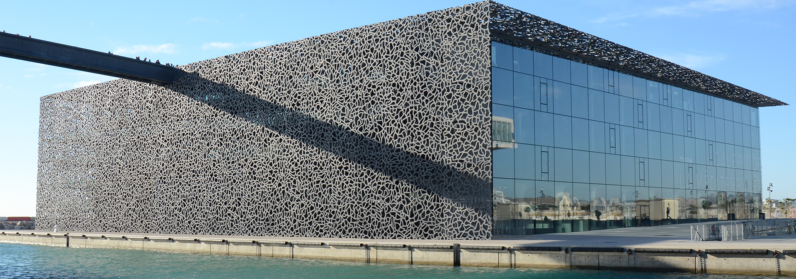
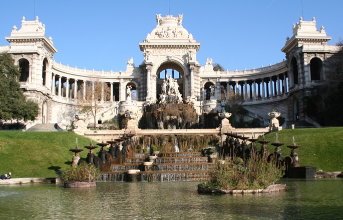
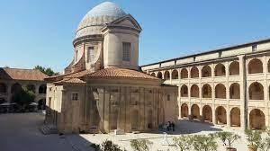
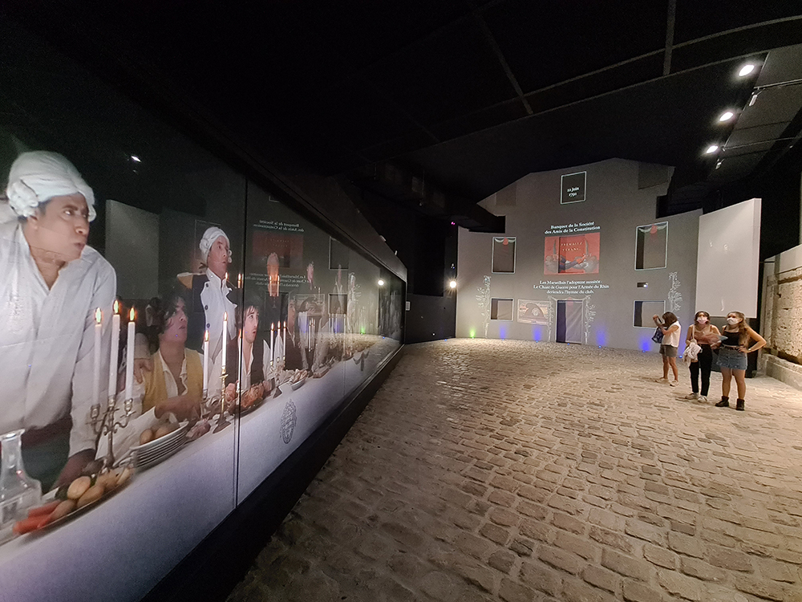

Les Musées De Marseille
Découvertes Des Musées
Le Mucem
Le nouveau bâtiment est construit sur l’ancien môle portuaire du J4 par l’architecte Rudy Ricciotti associé à Roland Carta, et il contient le cœur du Mucem. Il accueille deux plateaux d’expositions : le premier, avec La Galerie de la Méditerranée, est dédié à la découverte des étapes majeures des civilisations méditerranéennes. Le deuxième plateau accueille les expositions temporaires.
Le J4 comprend également un espace dédié aux enfants ; si vous programmez une sortie en famille à Marseille, les petits apprécieront le détour !
Il abrite aussi :
- Un auditorium pour la présentation de spectacles, de concerts, de cycles de cinéma
- Une librairie
- Un restaurant doté d’une terrasse panoramique dirigé par Gérald Passédat, chef 3 étoiles
Le Musée De l'Histoire De Marseille

Le musée d'Histoire de Marseille est un musée consacré à l'histoire de la ville de Marseille. Fondé en 1983, il a été entièrement rénové et a rouvert le 14 septembre 2013 à l'occasion de Marseille-Provence 2013. Installé dans le Centre Bourse, à proximité du Vieux-Port, le musée d'histoire de Marseille abrite le site du Port antique, une exposition permanente de 3 500 m2, un espace d'exposition temporaire, un centre de documentation et un auditorium2, ce qui en fait le plus important musée d'histoire urbaine en France.
Le Muséum D'Histoire Naturelle De Marseille
Le muséum d’histoire naturelle de Marseille a été créé en 1819 par Jean-Baptiste, marquis de Montgrand, maire de Marseille de mars 1813 à 1830 et le comte de Villeneuve-Bargemon, alors préfet. Il occupe, depuis 1869, l’aile droite du Palais Longchamp construit par l’architecte Henri-Jacques Espérandieu (1829-1874), dans le 4e arrondissement de Marseille. Le muséum a été créé en 1819. Il a occupé différents lieux, dont la Chapelle des Bernardines, avant de s'implanter définitivement en 1869 au Palais Longchamp qu'il partage avec le musée des Beaux-Arts. Le musée est aujourd'hui sous la tutelle du ministère de l'Enseignement supérieur et de la Recherche. Il a été classé musée de France en 2002.
Le Musée Des Beaux Arts

Le musée des Beaux-Arts de Marseille, en Provence-Alpes-Côte d'Azur, est l'un des principaux musées de la ville. Installé dans une aile du palais Longchamp il présente une collection de peintures, sculptures et dessins du xvie au xixe siècle.
Cet édifice majestueux, destiné à abriter le musée des Beaux-arts et le Muséum a été édifié sur les plans de l'architecte Henry Espérandieu. Au centre de cette monumentale composition, la grande fontaine représentant la Durance sur un char tiré par des taureaux de Camargue, rappelle que le palais commémore l'arrivée à Marseille des eaux du canal de la Durance .
Le musée expose un choix des plus remarquables chefs d'oeuvres de ses collections, riches de plus de 8 000 tableaux, sculptures et dessins du XVIe au XIXe siècle. Le rez-de-chaussée du musée accueille les peintures les plus anciennes du XVIe et XVIIe siècle et le premier étage, celles du XVIIIe au XIXe siècle.
Le Musée D'Archéologie Méditérranéen
Le musée d’archéologie méditerranéenne, qui se trouve au premier étage de la Vieille Charité à Marseille, regroupe deux départements : les antiquités égyptiennes et les antiquités classiques. L’archéologie régionale qui occupait une autre salle a été transférée au Musée d'histoire de Marseille au Centre Bourse. Au deuxième étage de La vieille Charité se trouve le Musée des Arts africains, océaniens et amérindiens.
La majeure partie de cette collection est constituée d’objets réunis par le docteur Clot-Bey (1793-1868) qui, à la demande du vice roi d’Égypte Méhémet Ali, séjourna longtemps dans ce pays et y créa l’école de médecine. Ce fonds acquis par la ville de Marseille pour un prix dérisoire, fut complété par des dons et des acquisitions diverses.
Cinq salles se succèdent en enfilade présentant les statues, sarcophages et objets divers de manière thématique, la dernière salle représentant une chambre funéraire.
Le Mémorial De La Marseillaise
Le Mémorial de la Marseillaise est un centre d’interprétation autour de l’histoire de l’hymne national. Il ouvre ses portes au public en 2011 après la réhabilitation du “Club des Jacobins” de la rue Thubaneau où le Chant de Guerre pour l’armée du Rhin, écrit par Rouget de Lisle le 25 avril 1792 à Strasbourg, fut chanté pour la première fois à Marseille le 22 juin de la même année.
Il rend hommage au rôle actif des marseillais dans la Révolution française. Le “parcours-spectacle” offre une découverte culturelle originale dédiée à tous les publics, qui s’appuie sur de nombreux outils multimédia : bornes interactives, films, productions sonores… Le visiteur progresse ainsi au fil du temps et des lieux comme le témoin privilégié de la Révolution française.
Il s'agit d'un centre d'interprétation d'histoire unique en son genre où le spectaculaire s'appuie sur une impressionnante richesse des ressources culturelles et historiques.